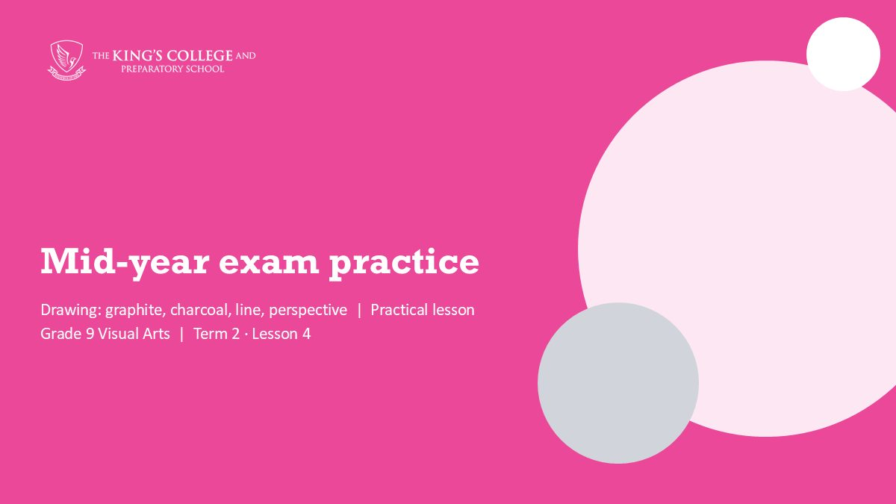

Term 2 · Lesson 4 · Practical lesson
Mid-year exam practice
Start here
Today I will
- Finish my composition under exam conditions
- Show a full value range, texture and shine
- Assess my drawing honestly with the rubric
Think first
Look at your drawing from across the room. What is the first thing you see, and is it what you wanted the viewer to see?
Words to know
- Composition
- How the parts of an artwork are arranged on the page.
- Rubric
- A table that shows what each level of work looks like and how it is marked.
- Self-assessment
- Judging your own work honestly against the criteria.
- Value range
- All the values from white to black.
- Craftsmanship
- Care and skill in how the work is made, including clean, controlled marks.
Slides

Notes
Finish the composition under exam conditions; self-assess with the exam rubric.
What the exam rubric looks for
- Observation and proportion: The objects are the right shape and size compared to each other.
- Value: Full range from white to black, with form that looks 3D.
- Texture: Marks that make the textured object convincing.
- Shine and reflection: Sharp highlights, reflections and hard and soft edges.
- Composition and craftsmanship: Balanced placement; clean, controlled work.
Using your 35 minutes
- Minutes 0–10: Check proportions; fix the big shapes.
- Minutes 10–25: Push the darks and build the texture.
- Minutes 25–32: Crisp highlights and edges on the shiny object.
- Minutes 32–35: Step back, clean smudges, sign.
Remember
Big shapes, then darks, then sharp lights: keep the plan in the exam.
Practical
You need: Charcoal, putty eraser, objects and lamp, exam rubric
Timed drawing and self-assessment
- Work in silence for 35 minutes, following the time plan.
- Stop when the timer ends and sign your drawing.
- Read the rubric and tick the level you think you reached in each row.
- Write one strength and one target for the mid-year exam.
- Hand in the rubric with your drawing.
Assessment
Mid-year practical exam follows: a texture-and-shine drawing in charcoal.
Test yourself
- Which part of the rubric do you most need to work on?
- What should you do in the last three minutes of the exam?
- Name one sign of good craftsmanship in charcoal.
Show answers
1. Own answer. 2. Step back, clean up smudges and sign. 3. Any one: clean margins, no accidental smudges, controlled edges, a full and deliberate value range.